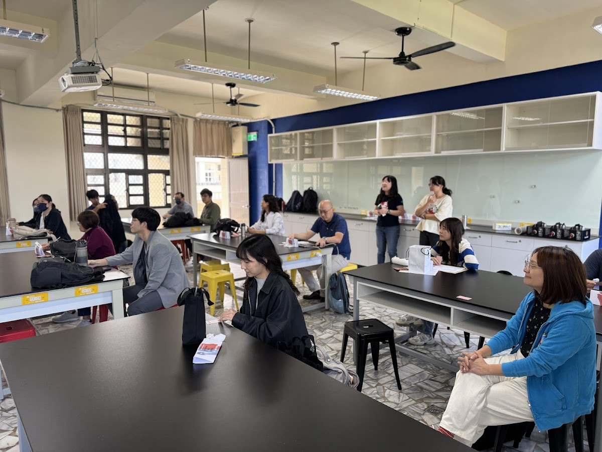
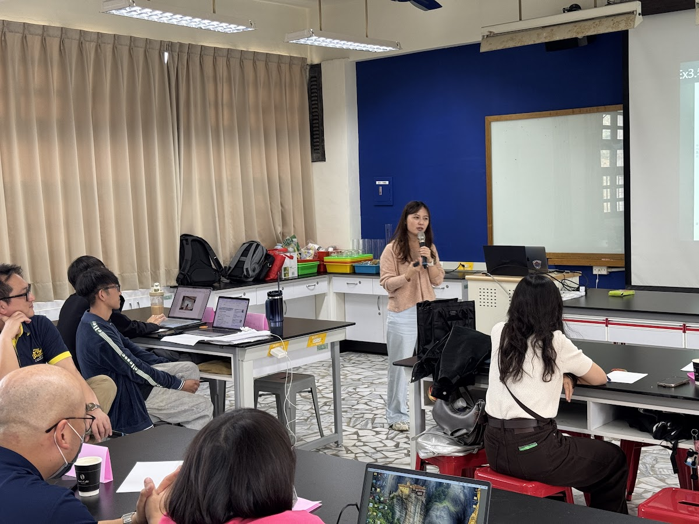
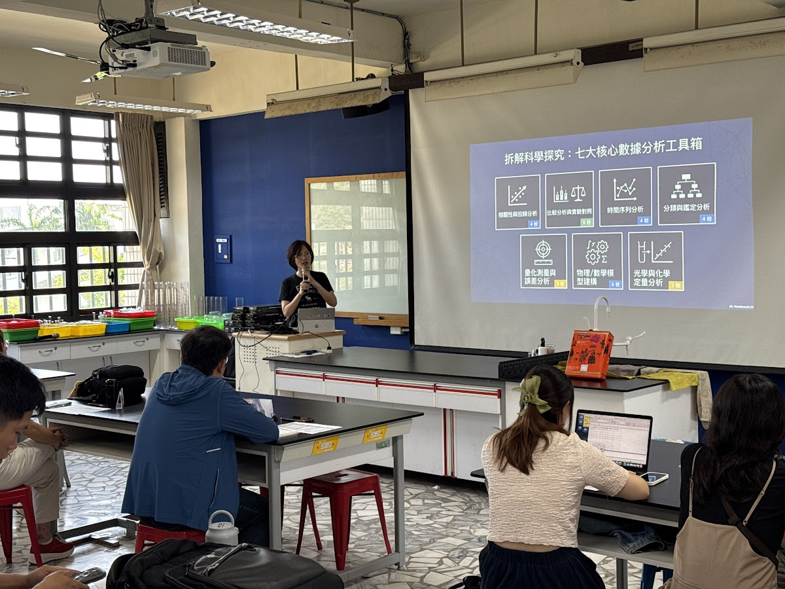
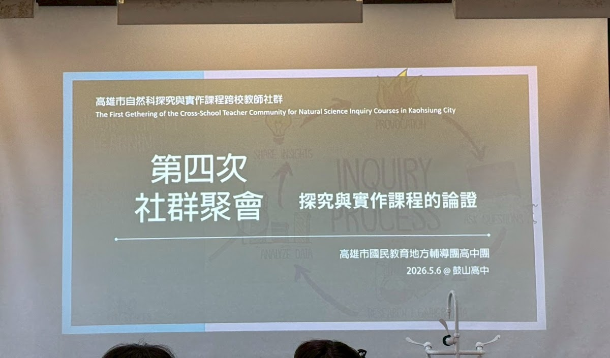
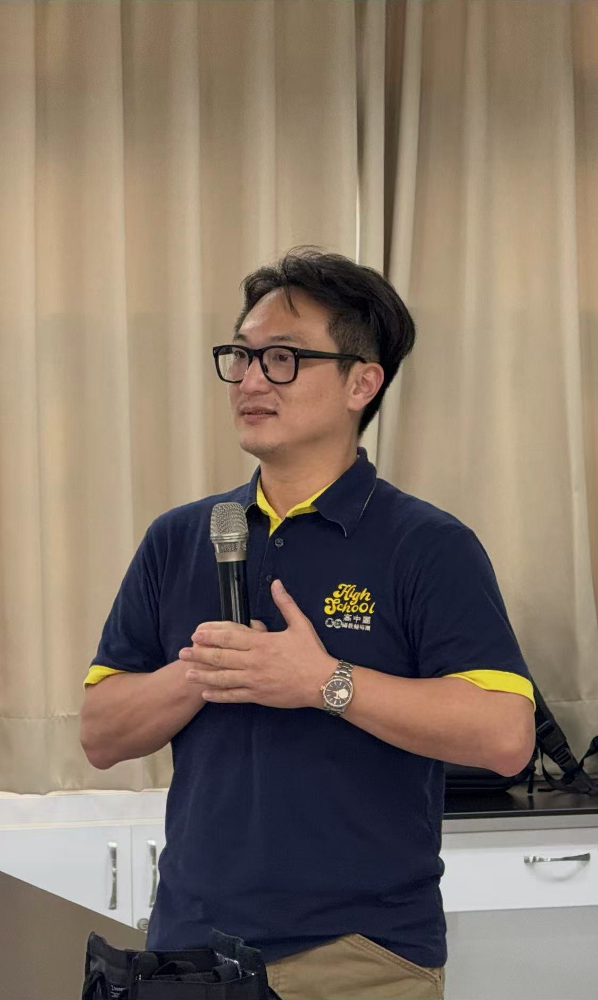
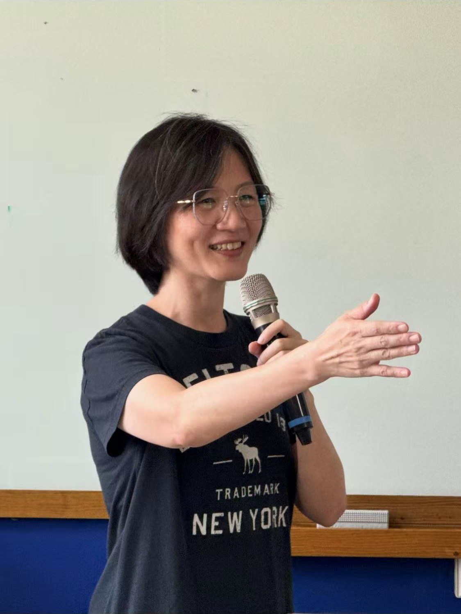

從需求出發
先理解老師，再安排活動。每場聚會的主題，都來自上一次大家提出的真實需求與期待。
社群的起點不是一場研習，而是先理解每一位老師。
2025 年秋天，幾位關心探究與實作課程的高雄教師組成核心小組。我們看見同樣的現實：課程需要更新、老師需要支持、學生需要的是長遠的探究態度，而不只是分數。
所以社群做的第一件事是傾聽——邀請各校授課教師，盤點大家的任教經驗、可以分享的亮點、課堂上真實的困擾、以及希望獲得的協助。2025 年 11 月 26 日，第一次跨校聚會在這樣的準備下誕生。
從那之後，社群以工作坊的型態持續聚會：每一場都從上一場的回饋長出來，從課程分享、數據分析到論證設計，老師們帶著自己的教材來，把想法當場修成能帶回教室的版本。
把不同學校、不同專長的教師經驗，整理成可共享的知識；願意一再回到現場修正、再出發——這就是社群長久的力量。
—— 高雄市探究與實作社群的共同信念
先理解老師，再安排活動。每場聚會的主題，都來自上一次大家提出的真實需求與期待。
每位老師的好做法都是社群的資產。用分享代替評比，降低開口的門檻，讓經驗流動起來。
工作坊不只聽講：帶著筆電與自己的教材來，當場討論、當場修改，成果直接回到教室使用。
從認識彼此到動手修課，點開照片看看每一場的現場，完整相簿在每張卡片裡。

第一次把各校老師聚在一起——分享自己怎麼教探究、聊課堂裡的真實困擾，也一起許願未來想要的主題與講師。共備的起點不是研習，而是傾聽。

由前鎮高中與高雄女中的老師分享校內探究與實作課程——從課程架構、任務設計到學生的真實表現，開啟跨校之間的深度對話，也為後續的數據分析主題鋪路。

聚焦科學探究中的數據分析：從「七大核心數據分析工具箱」出發，把統計思考放進課程設計，並以學生的學習成果為證據，診斷課程可以調整的地方。

邀請何興中老師帶領論證課程設計工作坊。老師們帶著筆電與自己的探究教材到場，實際動手修課，並認識如何以 AI 協作於論證與建模的教學。
主題不是排好的課表，而是從每一次聚會的回饋裡長出來的地圖。
用真實數據與統計工具強化探究課程的證據品質，讓學生的結論站得住腳。
讓學生不只動手做，更能說理——主張、證據與推理如何進入課堂任務設計。
探索 AI 在備課、出題、學習診斷與論證建模教學中的協作角色，讓工具放大專業。
把各校的課程設計與實施經驗變成彼此的養分，讓好的做法在城市裡流動。
每一位成員的投入，都讓社群更完整。這裡介紹已公開的核心夥伴。

前鎮高中・地球科學科
長期投入探究與實作課程推動，擅長從真實問題與在地情境出發，串連不同學校教師的專長。帶領風格重視傾聽、對話與持續陪伴，讓社群在專業之外，也保有彼此支持的溫度。

高雄中學・化學科
在化學教學現場累積紮實經驗，於探究設計、實驗思維與課堂轉化之間提供關鍵支持——協助大家把想法變得更精確、更可操作，也更貼近學生真實的理解挑戰。
物理、化學、生物、地科……跨校跨科的夥伴在每一次聚會中分享、提問、互相支持。如果你也在教探究與實作，歡迎加入我們的下一次聚會。
相簿開放瀏覽；共備教材與雲端資料夾為社群成員空間。
聚會公告、活動資料與相簿連結的集中地。加入方式請洽社群窗口。
前往 Classroom ↗歷次聚會的簡報、講義與共備素材，依場次整理，持續累積中。
前往雲端資料夾 ↗由何興中老師開設的延伸課程，搭配第四次聚會的論證主題。加入方式請見社群 Classroom 公告。
前往課程 Classroom ↗